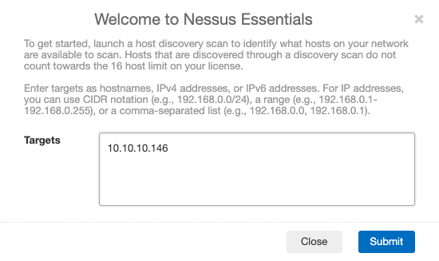
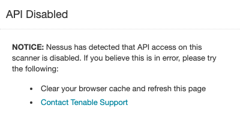
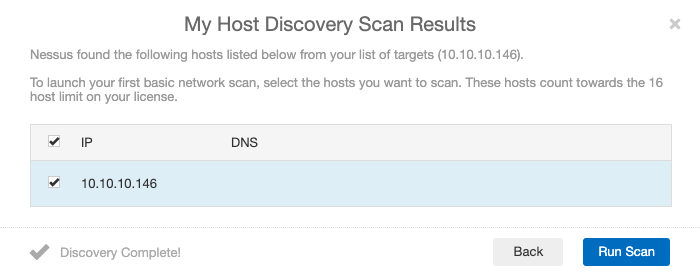
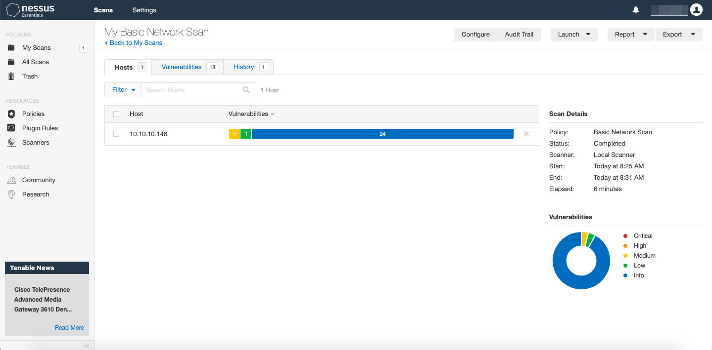
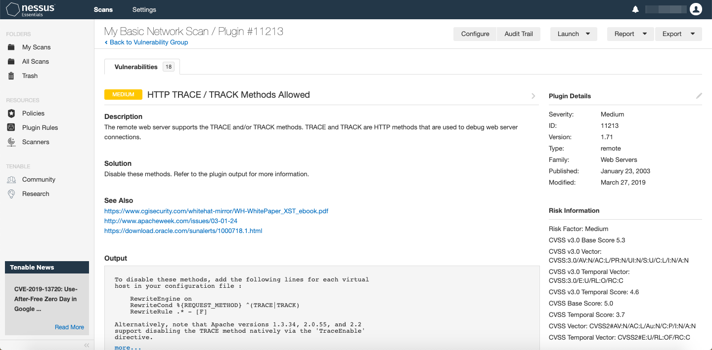
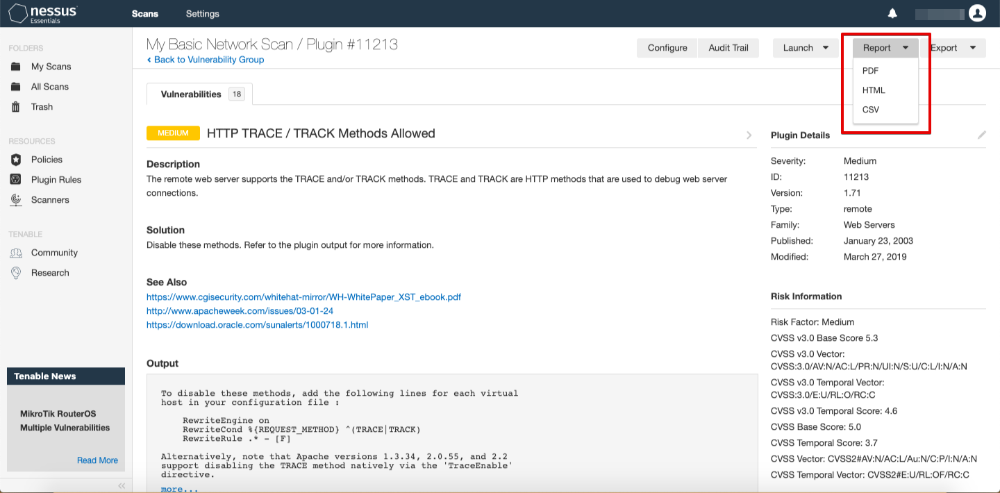

Vulnerability Assessment on macOS with Nessus
linux
tutorial
nessus
Last update on November 2019.
1. Installation
Download your version of choice from the Tenable website and follow the installation wizard. By the end a new browser tab should open up automatically with the address https://localhost:8834. Signup and wait for the final plugins to install.2. Enter your target's IP.
3. To get around this error, clear your browser's cache or open the URI in a new incognito tab.
4. Start the scan.
5. Check the results.
6. Click on the vulnerabilities to know more about them.
7. Generate a report.
8. Find and kill the process where the Nessus service is running.
~
ps aux | grep nessus
~
sudo kill -9 [pid]
9. To relaunch the app, open a new tab with https://localhost:8834, then run:
~
sudo /Library/Nessus/run/sbin/nessus-service -q